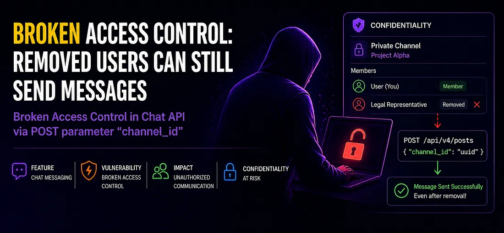

How I Found a Simple Broken Access Control Bug in a Chat Application

During a security testing of a chat feature on a target, I discovered a simple but impactful Broken Access Control (BAC) vulnerability.
This bug allowed a removed user of a channel to continue sending messages to a private channel — something that should never happen in a properly secured system.
Who Am I?
I'm 0xlumi, a security researcher focused on identifying and responsibly disclosing vulnerabilities in web applications.
My work mainly revolves around:
- Access control issues
- Authentication flaws
- Logical vulnerabilities
I enjoy digging into how systems actually enforce permissions — not just how they appear to.
Understanding the Target
While testing a SaaS-based collaboration and web hosting platform, which I will refer to as "Collab-it" for confidentiality purposes :)
Collab-it is a collaboration platform that includes a chat system where users can:
- Create private/public channels for communication and collaboration
- Add or remove members
- Communicate within restricted groups
In a typical secure design:
- Only current members of a channel should be able to send messages
- Once removed, access should be fully revoked
That's the expected behavior, but not what I found…….
The Discovery
While clicking around and understanding the target, which I always do whenever I start testing on any target, because deep understanding beats running scans, I then discovered a functionality where you can create a public and a private channel.
As a tester, the private channel caught my attention.. thoughts came rolling in:
- Can I access the private channel conversations without an invite?
- Can I view the members of the channels?
I created a private channel and started testing those scenarios, but access control was well implemented, but not until I thought to myself, can I still access functionality of this private channel after I have been removed?
Quickly I created another private channel, invited my second account to the private channel and started interacting, then I noticed something interesting.
When sending a message, the request to the API looked like this:
POST /api/v4/postsWith a parameter:
"channel_id": "uuid"
This channel_id identifies the chat channel where the message is sent. Just by looking at it, everything seemed normal. But the backend failed to verify whether the user was still a member of that channel.
The backend was basically saying — do you have a valid channel_id in your request? If you do then you can send messages to that channel, even if you are not a member of that channel.
Steps to Reproduce
I tested a simple real-world scenario:
- I created a private channel using Account A
- I added Account B
- Using Account B, I sent a message and captured the request in Burp Suite, then I sent it to the repeater tab
- Then, I removed Account B from the channel
- I replayed the captured request
👉 The message was successfully sent — even after removal.
Even more interesting:
- Logging out and logging back in did not invalidate this behavior
- The server continued accepting the request as valid
This confirmed that authorization checks were missing on the backend.
Impact
This might look simple, but the implications are serious:
- Removed users can continue interacting in private channels.
- Users believe access is revoked, but it isn't.
- Sensitive conversations could be influenced or disrupted.
Final Thoughts
I reported this to the company and they acknowledged the issue. This was a simple bug, but a good reminder that:
Access control issues don't always require complex techniques — sometimes, just replaying a request is enough.
I hope to share more of my findings, bye for now ;)